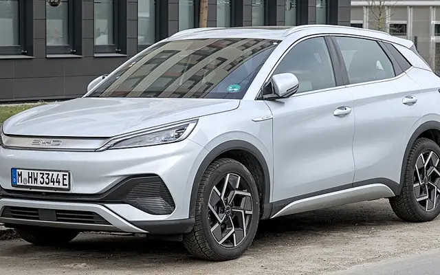

Par Motor › Precios por modelo › BYD Atto 3
Precio de segunda mano · noviembre de 2026¿Cuánto vale un BYD Atto 3 de segunda mano?

Precio justo estimado de un BYD Atto 3 usado en España, año por año, con los kilómetros normales para su edad y en buen estado: de 21.300 € a 34.400 €. Para tasar el tuyo con sus kilómetros reales y su estado, usa el tasador gratis.
Precios del BYD Atto 3 por año
Atto 3 (2022–hoy)
Precio de nuevo: 60 kWh 204 CV, 40.000 €
| Año | Km normales | 60 kWh 204 CV · Eléctrico |
|---|---|---|
| 2026 | 5.000 km | 34.400 € |
| 2025 | 20.000 km | 28.200 € |
| 2024 | 35.000 km | 25.600 € |
| 2023 | 50.000 km | 23.400 € |
| 2022 | 65.000 km | 21.300 € |
Kilómetros normales: 15.000 al año en gasolina, híbridos y eléctricos, y 20.000 en diésel, con un máximo de 100.000 km (por encima no tasamos: el precio depende demasiado del historial de cada coche). Cifras redondeadas a 100 €.
Preguntas frecuentes
¿Cuánto vale un BYD Atto 3 de segunda mano?
Según el año, la versión y los kilómetros, un BYD Atto 3 usado vale hoy de 21.300 € a 34.400 € en España. El más barato de nuestra tabla es un 60 kWh de 2022 (21.300 €) y el más caro un 60 kWh de 2026 (34.400 €). Son precios justos estimados entre particulares y profesionales, con los kilómetros normales para su edad y en buen estado.
¿Cuánto valor pierde un BYD Atto 3 al año?
Con unos años encima, un BYD Atto 3 pierde alrededor de un 9 % de su valor cada año (calculado sobre el 60 kWh de la generación Atto 3). Los primeros años la caída es mayor y a partir de los 70.000 km se acelera.
¿Qué motorizaciones tiene el BYD Atto 3?
En nuestra base de datos hay versiones eléctrico, en 1 generación: Atto 3.
¿Cómo sé si me piden demasiado por un BYD Atto 3?
Abre el tasador de Par Motor, elige el BYD Atto 3, el año y los kilómetros reales, y escribe lo que te piden. Te diremos si está por debajo del precio justo (chollo) o por encima (caro). Es gratis y no pide registro ni matrícula.
Otros BYD
Compara su coste real
El precio de compra es solo una parte. Mira cuánto te costaría al mes con combustible, seguro, neumáticos, mantenimiento y lo que pierde de valor.
Abrir el comparador →